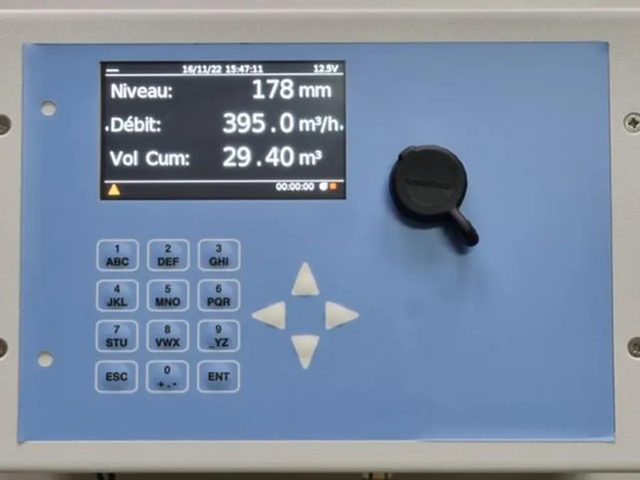

Débitmètres · Canal de comptage
DEBULLEDébitmètre bulle à bulle en poste fixe
La version poste fixe du bulle à bulle COMETEC, ex-BUL’R2 poste fixe. Installé en armoire électrique, il se contente de 12 Vdc pour 2 W, calcule le débit sur déversoir, seuil ou venturi, enregistre et pilote le préleveur.
- Consommation
- 12 Vdc, 2 W maximum
- Niveau
- 1 m pleine échelle
- Précision
- 0,1 % de la pleine échelle
- Mémoire
- Plus d’un an à 1 mesure / min
Idéal pour
- Autosurveillance
- Canaux de comptage
- Stations d’épuration
- Asservissement de préleveur
- Sites sur batterie
LeasingDisponible à l’achat ou en leasing, par mensualités. Comment ça marche
Points forts
Le bulle à bulle pour les points de mesure permanents, sobre en énergie.
- 2 W au maximumFonctionne en 12 Vdc, y compris sur batterie.
- Purge automatiqueGénérateur d’air intégré avec réserve et régulation.
- Aucun contact de la celluleSeul le tube est dans l’eau : ni encrassement ni vieillissement de membrane.
- Gestion par sitesPlusieurs configurations complètes mémorisées, chargées en une action.
- Préleveur asservi2 relais programmables, volume par impulsion réglable.
- Transfert par clé USBMesures, tables H/Q et configurations d’un appareil à l’autre.
Principe de mesure
Comme le BUL’R2, le DEBULLE mesure la hauteur d’eau par la pression nécessaire pour former une bulle d’air au bout d’un tube plongé dans l’écoulement, avec compensation en température.
La hauteur est convertie en débit par la loi de l’ouvrage : déversoir normalisé, formule ou table hauteur / débit. Associé à un capteur de vitesse, il convertit aussi la hauteur en section mouillée.
- Table hauteur / débit jusqu’à 50 points, plus de 30 tables mémorisées
- Densité du liquide paramétrable
Applications
Pour les points de mesure permanents équipés d’un organe déprimogène.
- AutosurveillanceComptage permanent en entrée et en sortie de station.
- Canaux de comptageDéversoirs, seuils, canaux Venturi et Palmer-Bowlus.
- Transmission vers l’automateOption sortie 4-20 mA du niveau ou du débit.
- Sites isolésFonctionnement sur batterie 12 V grâce à sa faible consommation.
Caractéristiques
Boîtier à installer en armoire, à l’abri des intempéries.
| Principe | Pression hydrostatique par bulle à bulle, compensée en température |
|---|---|
| Gamme | 1 m pleine échelle |
| Précision | 0,1 % de la pleine échelle ; 0,3 % sur la gamme de température |
| Température | − 20 à + 60 °C (stockage − 30 à + 70 °C) |
| Tube de bullage | Souple 4/6 mm, 50 m au maximum |
| Canne | Inox, 30 cm |
| Pression maximale | 1,9 bar |
| Boîtier | Polypropylène IP55, en armoire électrique, 296 × 190 × 115 mm, 1,8 kg |
|---|---|
| Afficheur | LCD graphique rétroéclairé, extinction automatique |
| Enregistreur | Pas de 5 s à 24 h, fonction Bilan, plus d’un an à 1 mesure / min |
| Alimentation | 12 Vdc, 2 W au maximum |
| Sorties | 2 relais programmables : préleveur ou totalisateur |
| Options | Sortie 4-20 mA · entrée 1 ou 2 × 4-20 mA · sortie RS485 sur demande |
| Port USB | Mesures, tables et configurations de site |
Téléchargements
Questions fréquentes
Les questions que nous posent le plus souvent les exploitants et les bureaux d’études.
Quelle différence entre le DEBULLE et le BUL’R2 ?
Même mesure bulle à bulle : le BUL’R2 est une valise portable sur batterie, pour les campagnes ; le DEBULLE s’installe en armoire, en poste fixe, et consomme 2 W au maximum.
Peut-il transmettre la mesure à un automate ?
Oui, avec l’option sortie 4-20 mA du niveau ou du débit. Une sortie RS485 est disponible sur demande.
Peut-il fonctionner sans secteur ?
Oui : il s’alimente en 12 Vdc et fonctionne sur batterie 12 V.
Comment saisir la loi hauteur / débit ?
Par les déversoirs normalisés programmés, par une formule Q = k × Hⁿ, ou par une table de 50 points saisie au clavier ou chargée depuis une clé USB.